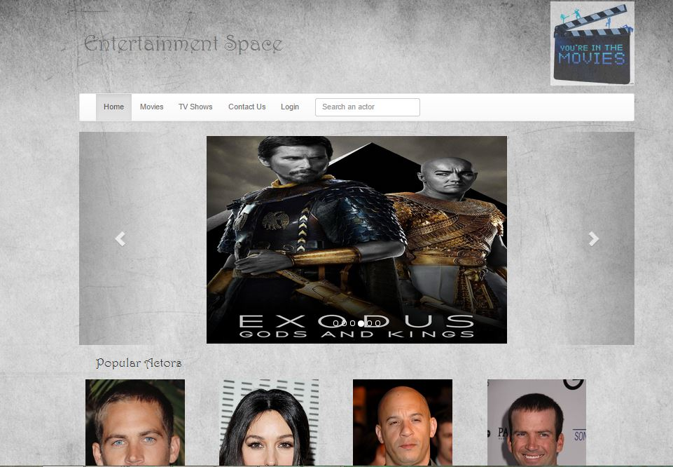

Summary of the Page : This is the homepage of the project. The .js file linked to this page makes an Ajax call to themoviedatabase API. The Ajax call is made to get the list of 20 most popular actors. Each JSON Object contains information about the actor such as the profile image ,id and other attributes about the actor. Id of the actor is passed as a query parameter to actorDetails.aspx. This displays the additional infomation about the actor. There is a separate JSON call to populate the carousel. Images are appended to a div tag and corresponding required carousel tags hence they are downloaded from API only once. Also the header contains all the tabs and footer contains the copyright information
Screenshot of the Page :
